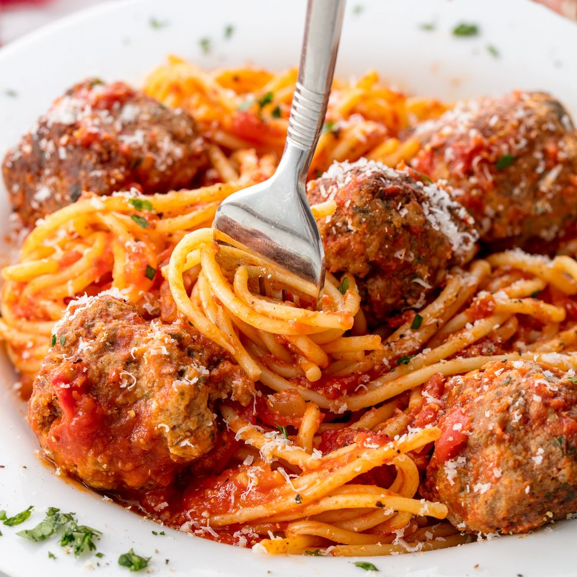

Spaghetti and meatballs is an Italian-American dish consisting of spaghetti, tomato sauce and meatballs.
Originally inspired by similar dishes from southern Italy, the modern version of spaghetti and meatballs was
developed by Italian immigrants in the USA. However, combinations of pasta with meat date back at least to the
Middle Ages, and pasta (including long pasta) dishes with tomato sauce and different kinds of meatballs are documented
in certain Italian regions and in modern Italian cookbooks as maccheroni alle polpette (translated as "spaghetti with
meatballs") and maccheroni alla chitarra con polpette, though these dishes are often found only in particular regions
and towns. They are especially popular in certain areas of Southern Italy, from where most Italian immigrants to the United
States emigrated, though generally the version served in Southern Italy features smaller meatballs than the current
Italian-American and Italian immigrant version.
1 lb. spaghetti
1 lb. ground beef
1/3 c. bread crumbs
1/4 c. finely chopped parsley
1/4 c. freshly grated Parmesan, plus more for serving
1 large egg
2 garlic cloves,
minced
Kosher salt
1/2 tsp. red pepper flakes
2 tbsp. extra-virgin olive oil
1/2 c. onion, finely chopped
1 (28-oz.) can crushed tomatoes
1 bay leaf
Freshly ground black pepper
Step 1
In a large pot of salted boiling water, cook pasta until al dente. Drain.
Step 2
In a large bowl, combine beef with bread crumbs, parsley, Parmesan, egg, garlic, 1 teaspoon salt,
and red pepper flakes. Mix until just combined then form into 16 balls.
Step 3
In a large pot over medium heat, heat oil. Add meatballs and cook, turning occasionally, until browned
on all sides, about 10 minutes. Transfer meatballs to a plate.
Step 4
Add onion to pot and cook until soft, 5 minutes. Add crushed tomatoes and bay leaf. Season with
salt and pepper and bring to a simmer. Return meatballs to pot and cover. Simmer until sauce has
thickened, 8 to 10 minutes.
Step 5
Serve pasta with a healthy scoop of meatballs and sauce. Top with Parmesan before serving.
SERVE WITH CHILLED JUICE!
And a Picture of the final product to complement our esteemed staff at Hell's Kitchen.
